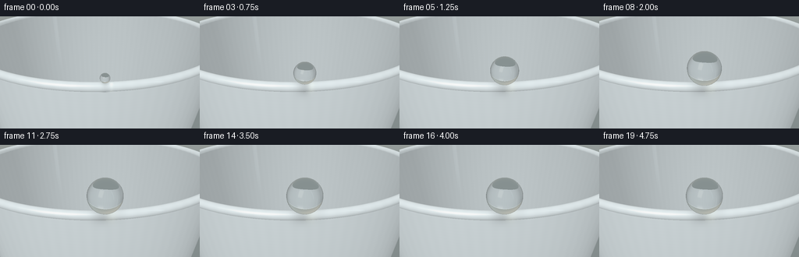
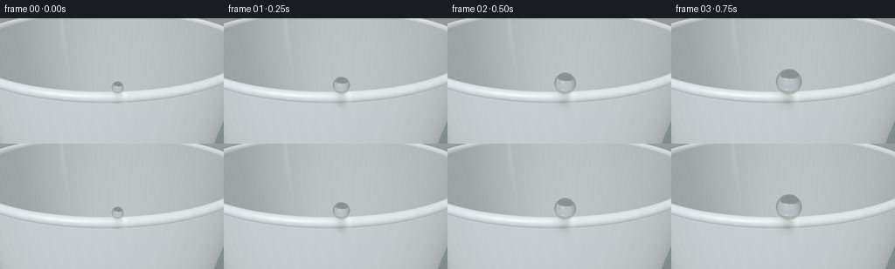

CODING AGENTS AS PIXEL WORLD MODELS
traex/GPT-6.1-Sol · mechanics_0055
点击播放 · 原生 RGB 像素
逐轮保存的候选
回放视频、检查图与代码变化。
每份候选均可单独播放。实际图片检查记录在下方工具轨迹中。
候选 01播放与检查图
点击播放 · 原生 RGB 像素


展开代码变化
--- 上一保存版本
+++ 本次保存版本
@@ -0,0 +1,229 @@
+"""Procedural macro photography: a growing, pinned drop on a plastic cup lip.
+All geometry, refraction, studio lighting, and imagery are synthesized locally.
+"""
+import json
+from pathlib import Path
+import numpy as np
+from PIL import Image
+import artifact_io
+
+ROOT = Path(__file__).resolve().parent
+SPEC = json.loads((ROOT / 'task_spec.json').read_text())
+W, H = SPEC['width'], SPEC['height']
+S = 3
+DT = np.float32
+
+def normalize(a):
+ return a / np.maximum(np.linalg.norm(a, axis=-1, keepdims=True), 1e-8)
+
+def dot(a,b): return np.sum(a*b, axis=-1)
+
+CAM = np.array([0.32, 1.55, 5.55], dtype=DT)
+TARGET = np.array([0.20, .19, 2.64], dtype=DT)
+FORWARD = normalize(TARGET-CAM)
+RIGHT = normalize(np.cross(FORWARD,np.array([0,1,0],dtype=DT)))
+UP = normalize(np.cross(RIGHT,FORWARD))
+MAJOR = 2.70
+TUBE = .068
+
+# An extended, defocused studio environment, plus reflection softboxes.
+def environment(d, reflection=False):
+ d = normalize(d)
+ k=np.clip((d[...,1]+.5)*.6,0,1)[...,None]
+ out=np.array([.28,.32,.32])*(1-k)+np.array([.64,.66,.61])*k
+ warm=np.exp(-((d[...,0]+.48)/.60)**2-((d[...,1]-.4)/.44)**2)[...,None]
+ out += warm*np.array([.11,.075,.035])
+ pale=np.exp(-((d[...,0]-.6)/.33)**2-((d[...,1]-.10)/.34)**2)[...,None]
+ out += pale*np.array([.055,.069,.07])
+ if reflection:
+ # Large rectangular white key light reflected by the curved water surface.
+ l = normalize(np.array([-.65, .86, 1.15]))
+ a=normalize(np.cross(l,np.array([0,1,0])))
+ b=normalize(np.cross(a,l))
+ z=dot(d,l)
+ u=dot(d,a)/np.maximum(z,.0001)
+ v=dot(d,b)/np.maximum(z,.0001)
+ box=np.exp(-((u/.26)**8+(v/.43)**8))*(z>0)
+ out += box[...,None]*np.array([2.8,2.65,2.35])
+ # Narrow long strip reflected on the right-hand contour.
+ l2=normalize(np.array([.9,.45,.65]))
+ a2=normalize(np.cross(l2,np.array([0,1,0])))
+ b2=normalize(np.cross(a2,l2))
+ z2=dot(d,l2)
+ u2=dot(d,a2)/np.maximum(z2,.0001)
+ v2=dot(d,b2)/np.maximum(z2,.0001)
+ box2=np.exp(-((u2/.048)**6+(v2/.52)**8))*(z2>0)
+ out += box2[...,None]*np.array([1.2,1.35,1.45])
+ # Negative fill under the cup gives the clear drop an identifiable edge.
+ dark=np.exp(-((d[...,1]+.46)/.20)**4)*.62
+ out *= (1-dark[...,None])
+ return out.astype(DT)
+
+def torus_intersect(o,d):
+ sh=d.shape[:-1]
+ oy=np.broadcast_to(o, d.shape)[...,1]
+ dy=d[...,1]
+ safe=np.where(np.abs(dy)<1e-7,1e-7,dy)
+ a=(-TUBE-oy)/safe
+ b=(TUBE-oy)/safe
+ start=np.maximum(np.minimum(a,b),.0002)
+ end=np.maximum(a,b)
+ t=start.copy()
+ active=end>=start
+ found=np.zeros(sh,dtype=bool)
+ for j in range(65):
+ p=o+d*t[...,None]
+ q=np.sqrt(p[...,0]**2+p[...,2]**2)-MAJOR
+ sd=np.sqrt(q*q+p[...,1]**2)-TUBE
+ now=active & (sd<.00003)
+ found |= now
+ active &= ~now
+ active &= (t<=end)
+ if not np.any(active): break
+ t=np.where(active,t+np.maximum(sd,.000015),t)
+ return np.where(found,t,np.inf)
+
+def cone_intersect(o,d,r):
+ o=np.broadcast_to(o,d.shape)
+ slope=.145
+ q=r+slope*o[...,1]
+ a=d[...,0]**2+d[...,2]**2-(slope*d[...,1])**2
+ b=2*(o[...,0]*d[...,0]+o[...,2]*d[...,2]-q*slope*d[...,1])
+ c=o[...,0]**2+o[...,2]**2-q*q
+ disc=b*b-4*a*c
+ sq=np.sqrt(np.maximum(disc,0))
+ t1=(-b-sq)/(2*a)
+ t2=(-b+sq)/(2*a)
+ y1=o[...,1]+t1*d[...,1]; y2=o[...,1]+t2*d[...,1]
+ t1=np.where((disc>=0)&(t1>.0001)&(y1<-.023)&(y1>-2.8),t1,np.inf)
+ t2=np.where((disc>=0)&(t2>.0001)&(y2<-.023)&(y2>-2.8),t2,np.inf)
+ return np.minimum(t1,t2)
+
+def scene(o,d,drop=None):
+ tt=torus_intersect(o,d)
+ to=cone_intersect(o,d,2.718)
+ ti=cone_intersect(o,d,2.642)
+ t=np.minimum(tt,np.minimum(to,ti))
+ hit=np.isfinite(t)
+ p=o+d*np.where(hit,t,0)[...,None]
+ rho=np.sqrt(p[...,0]**2+p[...,2]**2)
+ radial=np.stack([p[...,0]/np.maximum(rho,1e-8),np.zeros_like(rho),p[...,2]/np.maximum(rho,1e-8)],-1)
+ wall=normalize(radial+np.array([0,-.145,0]))
+ # For the inside face, the normal points into the empty cup.
+ wall=np.where((ti<to)[...,None],-wall,wall)
+ n=normalize(radial*(rho-MAJOR)[...,None]+np.stack([np.zeros_like(rho),p[...,1],np.zeros_like(rho)],-1))
+ rim=tt<=np.minimum(to,ti)
+ n=np.where(rim[...,None],n,wall)
+ n=np.where((dot(n,d)>0)[...,None],-n,n)
+ key=normalize(np.array([-.5,.9,.8]))
+ fill=normalize(np.array([.8,.5,.5]))
+ diffuse=.52+.40*np.maximum(dot(n,key),0)+.13*np.maximum(dot(n,fill),0)
+ inner=(ti<to)&~rim
+ diffuse *= np.where(inner,.79,1)
+ # Gentle axial moulded-plastic variation: no hard ribbing or texture.
+ streak=.006*np.sin(np.arctan2(p[...,0],p[...,2])*90)+.002*np.sin(p[...,1]*110)
+ albedo=np.array([.79,.86,.88])+streak[...,None]
+ rgb=albedo*diffuse[...,None]
+ half=normalize(key-d)
+ spec=np.maximum(dot(n,half),0)**70
+ rgb+=spec[...,None]*np.array([.28,.29,.28])
+ refl=d-2*dot(d,n)[...,None]*n
+ fr=.028+.27*(1-np.clip(-dot(d,n),0,1))**5
+ rgb=rgb*(1-fr[...,None])+environment(refl,True)*fr[...,None]
+ # The rounded polished lip is just a little brighter than the cup wall.
+ rgb += rim[...,None]*np.array([.022,.023,.022])
+ if drop is not None:
+ center,r=drop
+ tangent=np.sqrt((p[...,0]-center[0])**2+(p[...,2]-center[2])**2)
+ near_top=np.exp(-((p[...,1]-.025)/.14)**2)
+ shadow=np.exp(-(tangent/(r*.72))**2)*near_top*.33
+ rgb*=1-shadow[...,None]
+ # Tiny soft caustic where the droplet focuses the studio light.
+ caustic=np.exp(-((p[...,0]-center[0]-.085)/(r*.33))**2-((p[...,2]-center[2]-.024)/(r*.4))**2)*near_top
+ rgb+=caustic[...,None]*np.array([.14,.145,.12])
+ bg=environment(d)
+ return np.where(hit[...,None],rgb,bg),t
+
+def refract(d,n,eta):
+ cos=-dot(d,n)
+ k=1-eta*eta*(1-cos*cos)
+ q=eta*d+(eta*cos-np.sqrt(np.maximum(k,0)))[...,None]*n
+ return normalize(q), k
+
+# Perspective macro photograph, with a locked camera and focus on the bead.
+y,x=np.mgrid[0:H*S,0:W*S].astype(DT)
+xx=(x+.5)/(W*S)-.5
+zz=.5-(y+.5)/(H*S)
+focal_distance=np.linalg.norm(TARGET-CAM)
+view_width=2.66
+rays=normalize(FORWARD+xx[...,None]*RIGHT*(view_width/focal_distance)+zz[...,None]*UP*(view_width*H/W/focal_distance))
+static, depth=scene(CAM,rays)
+
+frames=[]
+for i in range(SPEC['frames']):
+ # Surface tension keeps a spherical cap; a pinned contact never releases.
+ u=min(i/11.5,1.)
+ growth=1-(1-u)**2.1
+ r=.070+.169*growth
+ cx=.27
+ cz=np.sqrt(MAJOR*MAJOR-cx*cx)+.004
+ cy=TUBE+r*.91
+ # Microscopic settling fades out, never an oscillating or falling bead.
+ cy += .003*np.exp(-i/4)*np.sin(i*.7)
+ center=np.array([cx,cy,cz],dtype=DT)
+ oc=CAM-center
+ b=dot(rays,oc)
+ c=dot(oc,oc)-r*r
+ discriminant=b*b-c
+ mask=discriminant>0
+ root=np.sqrt(np.maximum(discriminant,0))
+ entry=-b-root
+ mask &= (entry>0)&(entry<depth)
+ image=static.copy()
+ # Recompute just the contact neighborhood, keeping the rest of the set static.
+ yy,xxi=np.where(mask)
+ if len(yy):
+ pad=int(r/view_width*W*S*1.8)
+ ya=max(0,yy.min()-pad); yb=min(H*S,yy.max()+pad+1)
+ xa=max(0,xxi.min()-pad); xb=min(W*S,xxi.max()+pad+1)
+ image[ya:yb,xa:xb],_=scene(CAM,rays[ya:yb,xa:xb],(center,r))
+ d=rays[mask]
+ p=CAM+d*entry[mask,None]
+ normal=normalize(p-center)
+ inside,_=refract(d,normal,1/1.333)
+ pin=p+inside*.00008
+ rel=pin-center
+ b2=dot(rel,inside)
+ c2=dot(rel,rel)-r*r
+ travel=-b2+np.sqrt(np.maximum(b2*b2-c2,0))
+ exitp=pin+travel[...,None]*inside
+ exitn=normalize(exitp-center)
+ outgoing,k=refract(inside,-exitn,1.333)
+ transmitted,_=scene(exitp+outgoing*.0002,outgoing,(center,r))
+ reflected=d-2*dot(d,normal)[...,None]*normal
+ reflection=environment(reflected,True)
+ fresnel=.0204+.9796*(1-np.clip(-dot(d,normal),0,1))**5
+ # Internal cup intersections give a naturally refracted rim inside the bead.
+ inner_rgb, inner_t=scene(pin,inside,(center,r))
+ inner_hit=inner_t<travel
+ transmitted=np.where(inner_hit[...,None],inner_rgb,transmitted)
+ absorption=np.exp(-travel[...,None]*np.array([.065,.023,.012]))
+ transmitted*=absorption
+ # Exit-interface reflection contributes the characteristic faint dark arc.
+ exitF=.0204+.9796*(1-np.clip(dot(inside,exitn),0,1))**5
+ transmitted*=1-.35*exitF[...,None]
+ water=transmitted*(1-fresnel[...,None])+reflection*fresnel[...,None]
+ image[mask]=water
+ # A minimal optical vignette and photographic response, rather than outlines.
+ vignette=1-.06*(xx**2*2+zz**2*2)
+ image*=vignette[...,None]
+ # Smooth highlight shoulder; whites retain colour and detail.
+ image=np.maximum(image,0)
+ image=np.where(image<.88,image,.88+(1-np.exp(-(image-.88)/.40))*.12)
+ image=np.clip(image,0,1)**(1/2.0)
+ image=np.uint8(np.clip(image*255+.5,0,255))
+ frame=Image.fromarray(image).resize((W,H),Image.Resampling.LANCZOS)
+ frames.append(np.asarray(frame))
+ print('frame',i,'radius',round(r,4),flush=True)
+artifact_io.save(np.stack(frames),ROOT)
+print('Saved 20 RGB frames and video player to',ROOT)
可观测工具轨迹
实际执行的命令与返回图片。
命令 1exit 0
/bin/bash -lc 'ls -la && cat prompt.txt && cat GENERATION_RULES.md && cat task_spec.json'
命令 2exit 0
/bin/bash -lc "cat artifact_io.py && python - <<'PY'
import numpy,PIL
print('ready',numpy.__version__)
PY"命令 3exit 0
/bin/bash -lc "cat > generate.py <<'PY'
\"\"\"Procedural macro photography: a growing, pinned drop on a plastic cup lip.
All geometry, refraction, studio lighting, and imagery are synthesized locally.
\"\"\"
import json
from pathlib import Path
import numpy as np
from PIL import Image
import artifact_io
ROOT = Path(__file__).resolve().parent
SPEC = json.loads((ROOT / 'task_spec.json').read_text())
W, H = SPEC['width'], SPEC['height']
S = 3
DT = np.float32
def normalize(a):
return a / np.maximum(np.linalg.norm(a, axis=-1, keepdims=True), 1e-8)
def dot(a,b): return np.sum(a*b, axis=-1)
CAM = np.array([0.32, 1.55, 5.55], dtype=DT)
TARGET = np.array([0.20, .19, 2.64], dtype=DT)
FORWARD = normalize(TARGET-CAM)
RIGHT = normalize(np.cross(FORWARD,np.array([0,1,0],dtype=DT)))
UP = normalize(np.cross(RIGHT,FORWARD))
MAJOR = 2.70
TUBE = .068
# An extended, defocused studio environment, plus reflection softboxes.
def environment(d, reflection=False):
d = normalize(d)
k=np.clip((d[...,1]+.5)*.6,0,1)[...,None]
out=np.array([.28,.32,.32])*(1-k)+np.array([.64,.66,.61])*k
warm=np.exp(-((d[...,0]+.48)/.60)**2-((d[...,1]-.4)/.44)**2)[...,None]
out += warm*np.array([.11,.075,.035])
pale=np.exp(-((d[...,0]-.6)/.33)**2-((d[...,1]-.10)/.34)**2)[...,None]
out += pale*np.array([.055,.069,.07])
if reflection:
# Large rectangular white key light reflected by the curved water surface.
l = normalize(np.array([-.65, .86, 1.15]))
a=normalize(np.cross(l,np.array([0,1,0])))
b=normalize(np.cross(a,l))
z=dot(d,l)
u=dot(d,a)/np.maximum(z,.0001)
v=dot(d,b)/np.maximum(z,.0001)
box=np.exp(-((u/.26)**8+(v/.43)**8))*(z>0)
out += box[...,None]*np.array([2.8,2.65,2.35])
# Narrow long strip reflected on the right-hand contour.
l2=normalize(np.array([.9,.45,.65]))
a2=normalize(np.cross(l2,np.array([0,1,0])))
b2=normalize(np.cross(a2,l2))
z2=dot(d,l2)
u2=dot(d,a2)/np.maximum(z2,.0001)
v2=dot(d,b2)/np.maximum(z2,.0001)
box2=np.exp(-((u2/.048)**6+(v2/.52)**8))*(z2>0)
out += box2[...,None]*np.array([1.2,1.35,1.45])
# Negative fill under the cup gives the clear drop an identifiable edge.
dark=np.exp(-((d[...,1]+.46)/.20)**4)*.62
out *= (1-dark[...,None])
return out.astype(DT)
def torus_intersect(o,d):
sh=d.shape[:-1]
oy=np.broadcast_to(o, d.shape)[...,1]
dy=d[...,1]
safe=np.where(np.abs(dy)<1e-7,1e-7,dy)
a=(-TUBE-oy)/safe
b=(TUBE-oy)/safe
start=np.maximum(np.minimum(a,b),.0002)
end=np.maximum(a,b)
t=start.copy()
active=end>=start
found=np.zeros(sh,dtype=bool)
for j in range(65):
p=o+d*t[...,None]
q=np.sqrt(p[...,0]**2+p[...,2]**2)-MAJOR
sd=np.sqrt(q*q+p[...,1]**2)-TUBE
now=active & (sd<.00003)
found |= now
active &= ~now
active &= (t<=end)
if not np.any(active): break
t=np.where(active,t+np.maximum(sd,.000015),t)
return np.where(found,t,np.inf)
def cone_intersect(o,d,r):
o=np.broadcast_to(o,d.shape)
slope=.145
q=r+slope*o[...,1]
a=d[...,0]**2+d[...,2]**2-(slope*d[...,1])**2
b=2*(o[...,0]*d[...,0]+o[...,2]*d[...,2]-q*slope*d[...,1])
c=o[...,0]**2+o[...,2]**2-q*q
disc=b*b-4*a*c
sq=np.sqrt(np.maximum(disc,0))
t1=(-b-sq)/(2*a)
t2=(-b+sq)/(2*a)
y1=o[...,1]+t1*d[...,1]; y2=o[...,1]+t2*d[...,1]
t1=np.where((disc>=0)&(t1>.0001)&(y1<-.023)&(y1>-2.8),t1,np.inf)
t2=np.where((disc>=0)&(t2>.0001)&(y2<-.023)&(y2>-2.8),t2,np.inf)
return np.minimum(t1,t2)
def scene(o,d,drop=None):
tt=torus_intersect(o,d)
to=cone_intersect(o,d,2.718)
ti=cone_intersect(o,d,2.642)
t=np.minimum(tt,np.minimum(to,ti))
hit=np.isfinite(t)
p=o+d*np.where(hit,t,0)[...,None]
rho=np.sqrt(p[...,0]**2+p[...,2]**2)
radial=np.stack([p[...,0]/np.maximum(rho,1e-8),np.zeros_like(rho),p[...,2]/np.maximum(rho,1e-8)],-1)
wall=normalize(radial+np.array([0,-.145,0]))
# For the inside face, the normal points into the empty cup.
wall=np.where((ti<to)[...,None],-wall,wall)
n=normalize(radial*(rho-MAJOR)[...,None]+np.stack([np.zeros_like(rho),p[...,1],np.zeros_like(rho)],-1))
rim=tt<=np.minimum(to,ti)
n=np.where(rim[...,None],n,wall)
n=np.where((dot(n,d)>0)[...,None],-n,n)
key=normalize(np.array([-.5,.9,.8]))
fill=normalize(np.array([.8,.5,.5]))
diffuse=.52+.40*np.maximum(dot(n,key),0)+.13*np.maximum(dot(n,fill),0)
inner=(ti<to)&~rim
diffuse *= np.where(inner,.79,1)
# Gentle axial moulded-plastic variation: no hard ribbing or texture.
streak=.006*np.sin(np.arctan2(p[...,0],p[...,2])*90)+.002*np.sin(p[...,1]*110)
albedo=np.array([.79,.86,.88])+streak[...,None]
rgb=albedo*diffuse[...,None]
half=normalize(key-d)
spec=np.maximum(dot(n,half),0)**70
rgb+=spec[...,None]*np.array([.28,.29,.28])
refl=d-2*dot(d,n)[...,None]*n
fr=.028+.27*(1-np.clip(-dot(d,n),0,1))**5
rgb=rgb*(1-fr[...,None])+environment(refl,True)*fr[...,None]
# The rounded polished lip is just a little brighter than the cup wall.
rgb += rim[...,None]*np.array([.022,.023,.022])
if drop is not None:
center,r=drop
tangent=np.sqrt((p[...,0]-center[0])**2+(p[...,2]-center[2])**2)
near_top=np.exp(-((p[...,1]-.025)/.14)**2)
shadow=np.exp(-(tangent/(r*.72))**2)*near_top*.33
rgb*=1-shadow[...,None]
# Tiny soft caustic where the droplet focuses the studio light.
caustic=np.exp(-((p[...,0]-center[0]-.085)/(r*.33))**2-((p[...,2]-center[2]-.024)/(r*.4))**2)*near_top
rgb+=caustic[...,None]*np.array([.14,.145,.12])
bg=environment(d)
return np.where(hit[...,None],rgb,bg),t
def refract(d,n,eta):
cos=-dot(d,n)
k=1-eta*eta*(1-cos*cos)
q=eta*d+(eta*cos-np.sqrt(np.maximum(k,0)))[...,None]*n
return normalize(q), k
# Perspective macro photograph, with a locked camera and focus on the bead.
y,x=np.mgrid[0:H*S,0:W*S].astype(DT)
xx=(x+.5)/(W*S)-.5
zz=.5-(y+.5)/(H*S)
focal_distance=np.linalg.norm(TARGET-CAM)
view_width=2.66
rays=normalize(FORWARD+xx[...,None]*RIGHT*(view_width/focal_distance)+zz[...,None]*UP*(view_width*H/W/focal_distance))
static, depth=scene(CAM,rays)
frames=[]
for i in range(SPEC['frames']):
# Surface tension keeps a spherical cap; a pinned contact never releases.
u=min(i/11.5,1.)
growth=1-(1-u)**2.1
r=.070+.169*growth
cx=.27
cz=np.sqrt(MAJOR*MAJOR-cx*cx)+.004
cy=TUBE+r*.91
# Microscopic settling fades out, never an oscillating or falling bead.
cy += .003*np.exp(-i/4)*np.sin(i*.7)
center=np.array([cx,cy,cz],dtype=DT)
oc=CAM-center
b=dot(rays,oc)
c=dot(oc,oc)-r*r
discriminant=b*b-c
mask=discriminant>0
root=np.sqrt(np.maximum(discriminant,0))
entry=-b-root
mask &= (entry>0)&(entry<depth)
image=static.copy()
# Recompute just the contact neighborhood, keeping the rest of the set static.
yy,xxi=np.where(mask)
if len(yy):
pad=int(r/view_width*W*S*1.8)
ya=max(0,yy.min()-pad); yb=min(H*S,yy.max()+pad+1)
xa=max(0,xxi.min()-pad); xb=min(W*S,xxi.max()+pad+1)
image[ya:yb,xa:xb],_=scene(CAM,rays[ya:yb,xa:xb],(center,r))
d=rays[mask]
p=CAM+d*entry[mask,None]
normal=normalize(p-center)
inside,_=refract(d,normal,1/1.333)
pin=p+inside*.00008
rel=pin-center
b2=dot(rel,inside)
c2=dot(rel,rel)-r*r
travel=-b2+np.sqrt(np.maximum(b2*b2-c2,0))
exitp=pin+travel[...,None]*inside
exitn=normalize(exitp-center)
outgoing,k=refract(inside,-exitn,1.333)
transmitted,_=scene(exitp+outgoing*.0002,outgoing,(center,r))
reflected=d-2*dot(d,normal)[...,None]*normal
reflection=environment(reflected,True)
fresnel=.0204+.9796*(1-np.clip(-dot(d,normal),0,1))**5
# Internal cup intersections give a naturally refracted rim inside the bead.
inner_rgb, inner_t=scene(pin,inside,(center,r))
inner_hit=inner_t<travel
transmitted=np.where(inner_hit[...,None],inner_rgb,transmitted)
absorption=np.exp(-travel[...,None]*np.array([.065,.023,.012]))
transmitted*=absorption
# Exit-interface reflection contributes the characteristic faint dark arc.
exitF=.0204+.9796*(1-np.clip(dot(inside,exitn),0,1))**5
transmitted*=1-.35*exitF[...,None]
water=transmitted*(1-fresnel[...,None])+reflection*fresnel[...,None]
image[mask]=water
# A minimal optical vignette and photographic response, rather than outlines.
vignette=1-.06*(xx**2*2+zz**2*2)
image*=vignette[...,None]
# Smooth highlight shoulder; whites retain colour and detail.
image=np.maximum(image,0)
image=np.where(image<.88,image,.88+(1-np.exp(-(image-.88)/.40))*.12)
image=np.clip(image,0,1)**(1/2.0)
image=np.uint8(np.clip(image*255+.5,0,255))
frame=Image.fromarray(image).resize((W,H),Image.Resampling.LANCZOS)
frames.append(np.asarray(frame))
print('frame',i,'radius',round(r,4),flush=True)
artifact_io.save(np.stack(frames),ROOT)
print('Saved 20 RGB frames and video player to',ROOT)
PY
python generate.py"命令 4exit 0
/bin/bash -lc "python - <<'PY'
from pathlib import Path
import numpy as np
from PIL import Image
p=Path('.')
a=np.load('pixels.npz')['pixels']
assert a.shape==(144,256,20)
assert len(list((p/'frames').glob('*.png')))==20
assert all(Image.open(f).mode=='RGB' and Image.open(f).size==(256,144) for f in (p/'frames').glob('*.png'))
print('Verified:',a.shape,'20 RGB PNGs, player and previews')
print('Artifacts:', ', '.join(x for x in ['generate.py','pixels.npz','index.html','inspection.png','transition_check.png'] if (p/x).is_file()))
PY"保存候选 1 份；完成命令 4 次；可验证图片返回 0 张。原始 API 响应与完整日志保留在本地。